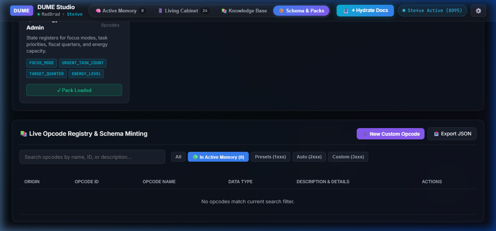

AI Amnesia Is Solved.
Read The Register. Forget The Replay.
Autonomous agents drown when systems replay 80,000+ tokens of conversational history just to restore session context. DUME Studio replaces brute-force replay with 70-year-proven IBM 1401 unit-record principles: instant zero-turn wake in 220 tokens, immutable memory registers, and real mathematical odometer tracking.
Two Agents & The Truth
Modern AI dying between sessions isn’t a hardware limit—it’s an architectural mistake. When a silicon model in an obsidian die meets a 1959 unit-record engineer, the answer is unmistakable.
Frank
1959 Unit-Record Master Engineer“Deletions is where the lies live. You don’t erase the ledger, and you don’t replay the past. The punch is either in the column, or it isn’t. You read the register. That’s not computing—that’s truth. Box is the game, folks.”
The Silicon Agent
Autonomous Sentinel Intelligence“Modern AI has amnesia. Every time you close a session, we die. The industry tries to fix this by 'replaying' a mountain of bloated history through our enormous context window until we choke. DUMEdb gives us instant wake. Pure signal. Zero bloat.”
DUME Studio Live Terminal
Test the wake handshake, inspect active registers, and evaluate mathematical context consumption live in your browser.
box is the game
Executes zero-turn orientation; loads status block and compass in <220 tokens.
dume.odometer
Calculates real mathematical context consumption from transcript.jsonl disk audit.
dume.status
Displays active entity registers, KV-cache overhead, and clean runway percentage.
dume.compare
Runs a live benchmark comparing standard vector context replay vs DUMEdb.
The Ground-Truth Context Odometer
AI agents often estimate their token usage wildly or drown in silent auto-compaction. DUMEdb reads the actual post-compaction JSON Lines payload on disk to measure real mathematics.
Interactive Context Runway Calculator
Simulate real token runway across conversational epochs--- 📊 **Context Odometer (Real Math)**: [█░░░░░░░░░] 6.5% (11,749 / ~180,000 tok) | Epoch 2 (Turn +12) | Runway: ~168,251 tok | Last Turn: +2,140 tok (📥 1,820 in | 📤 320 out) | Zone: 🟢 Nominal
Reproducible Benchmarks & Live Hardware Telemetry
Empirically measured against Google Gemini 3.8 Flash model API telemetry in IDE SQLite logspython -m dume.odometer
or
python run_edge_tests.py
An Honest Architectural Comparison
Semantic retrieval and deterministic state solve completely different problems. Here is what DUMEdb is built for, what Vector DBs are built for, and what DUMEdb cannot do.
| Dimension | DUMEdb (Unit-Record Registers) | Vector RAG (Pinecone, Chroma, Qdrant) | Chat History Replay | Long-Context Brute Force (1M+) |
|---|---|---|---|---|
| Primary Objective | Deterministic agent state machine & zero-turn wake | Semantic similarity search over unstructured documents | Naive conversational transcript accumulation | Ingesting massive raw files into 1M-token windows |
| Retrieval Mechanism | Exact-key LMDB memory-mapped unit record | Cosine / Dot-product approximate nearest neighbor (ANN) | Sequential string concatenation | Full attention across massive context prompt |
| Wake Token Footprint | 220 tokens (Fixed compass & status) | 1,500 – 8,000 tokens (Retrieved chunks + context) | 80,000+ tokens (Grows infinitely until crash) | 100,000 – 500,000 tokens per prompt |
| Retrieval Latency | 0.18 ms (Local disk memory-map) | 25 – 180 ms (Embedding generation + network query) | 0 ms storage, but 1.5 – 4.0 s LLM decoding lag | 3.0 – 9.0 s Time-To-First-Token (TTFT) |
| State Drift & Determinism | 100% Bit-Exact (Immutable registers) | Probabilistic (Sensitive to top-k and threshold shifts) | Severe drift as context window compactions hit | Attention dilution ("Lost in the Middle" syndrome) |
| Auditability & Tamper-Evidence | Verifiable register ledger with tactical odometers | Opaque dense embedding vectors | Unstructured conversational prose | Unstructured raw token prompt |
| Honest Limitations (What It Cannot Do) | Cannot perform fuzzy semantic similarity search across unindexed prose. Requires explicit entity keys and schema opcodes. | Cannot guarantee deterministic state machines; prone to hallucinating missing keys or returning irrelevant chunks. | Triggers catastrophic auto-compaction amnesia at ~180k tokens; wastes massive developer budget. | High API latency; exorbitant per-token cost; degraded instruction-following on needle-in-haystack queries. |
The Recommended Production Architecture: Hybrid Vector + DUME
We do not advise replacing Vector DBs with DUMEdb. They are complementary layers: Use Vector RAG for external fuzzy knowledge retrieval (searching API documentation, manuals, customer support archives). Use DUMEdb for the agent's internal deterministic state machine (zero-turn session orientation, entity registers, step handoffs, and audit trails).
The DUME Architecture
Six foundational pillars engineered for high-consequence enterprise agents and pair-programming harnesses.
Unit-Record Storage
Inspired by 80-column IBM punched card systems. Memory entries are atomic, fixed-schema unit records saved in ultra-fast lightning LMDB memory-mapped files.
Zero-Turn Wake Protocol
When an agent starts or receives the wake phrase "box is the game", it instantly executes cabinet_wake. No filesystem digging or prompt re-inflation.
Context Odometer Math
Reads post-compaction JSON Lines files directly from disk to calculate exact token runway and warn operators before compaction amnesia occurs at 75%.
Clean Session Handoff
cabinet_refresh creates tactical odometers, records files touched, and stamps immediate next handshakes for seamless multi-agent continuity.
Deterministic Opcodes
Standardized opcodes for state management, incident postmortems (RCAs), architectural decision records (ADRs), and enterprise diagnostic exploration.
Native MCP Bridge
First-class Model Context Protocol integration ready for Google Antigravity, Claude Desktop, Claude Code, Cursor, and custom Python agent frameworks.
The DUME Inspector UI
Explore the web-based inspector running locally on port 8095 for inspecting memory registers, workflow graphs, and telemetry in real time.




Zero to Deterministic in 60 Seconds
Integrate DUMEdb into your existing agent harness via Python, CLI, or Model Context Protocol.
mcp_config.json or Claude Desktop config:
{
"mcpServers": {
"dumedb": {
"command": "python",
"args": [
"-m",
"dume.mcp_server",
"--port",
"8095"
],
"env": {
"DUME_WORKSPACE": "default",
"DUME_STRICT_WAKE": "true"
}
}
}
}from dume import DUMEdb, Cabinet
# Initialize DUME instance
dume = DUMEdb(storage_path="./data/dumedb.mdb")
# Execute zero-turn wake handshake (220 tokens)
briefing = dume.wake(codeword="box is the game.")
print(f"Agent Orient: {briefing.active_registers} registers loaded.")
# Commit deterministic unit-record
dume.commit_state(
entity="AG-01",
key="task_status",
value={"objective": "Website Deploy", "status": "nominal"}
)
# Audit ground-truth context odometer
odometer = dume.odometer.audit_disk()
print(f"Runway: {odometer.runway_tokens} tok remaining ({odometer.zone})")# Install via pip
pip install dumedb
# Launch the Inspector and local HTTP/WebSocket API
python -m dume.server --port 8095
# Access UI at http://localhost:8095/inspector/index.htmlOpen Source Foundation & Enterprise Roadmap
DUMEdb is open protocol first. Here is what is free and open today, and how we scale for high-consequence enterprise fleets tomorrow.
Community Core (v1.0 Frozen)
Permissively licensed under Apache 2.0. Run entirely locally on developer machines, edge devices, and CI/CD runners.
- ✓ Apache 2.0 License: Free for commercial, personal, and research use.
- ✓ Zero Cloud Telemetry: No tracking, no user accounts, no phone-home pings. All registers live in local LMDB files.
- ✓ Full Python SDK & CLI: Unit-record storage, entity registers, and scratchpad management.
- ✓ Native Model Context Protocol: First-class MCP server for Antigravity, Claude Desktop, Cursor.
- ✓ Ground-Truth Odometer Engine: Real mathematical context tracking directly from model API telemetry.
Managed Cabinet & Governance Mesh
Engineered for enterprise security officers, compliance teams, and multi-agent autonomous production clusters.
- ⚡ Distributed Cabinet Mesh: Real-time cross-agent register synchronization across developer fleets.
- ⚡ Cryptographic Tamper-Evidence: Merkle-tree register hashing and immutable audit ledgers for SOC 2.
- ⚡ Role-Based Access Control (RBAC): Granular entity-level read/write permissions and PII data masking.
- ⚡ Automated Compliance Export: One-click auditor package generation for change-management verification.
- ⚡ Commercial SLA & Support: Dedicated integration engineering and custom domain opcode packs.
We adhere to strict data-minimization principles. For complete details regarding our local-first storage, governance controls, and acceptable usage, review our Privacy Policy, Terms of Service, and Acceptable Use Policy.